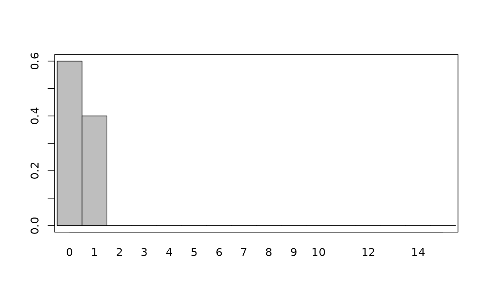
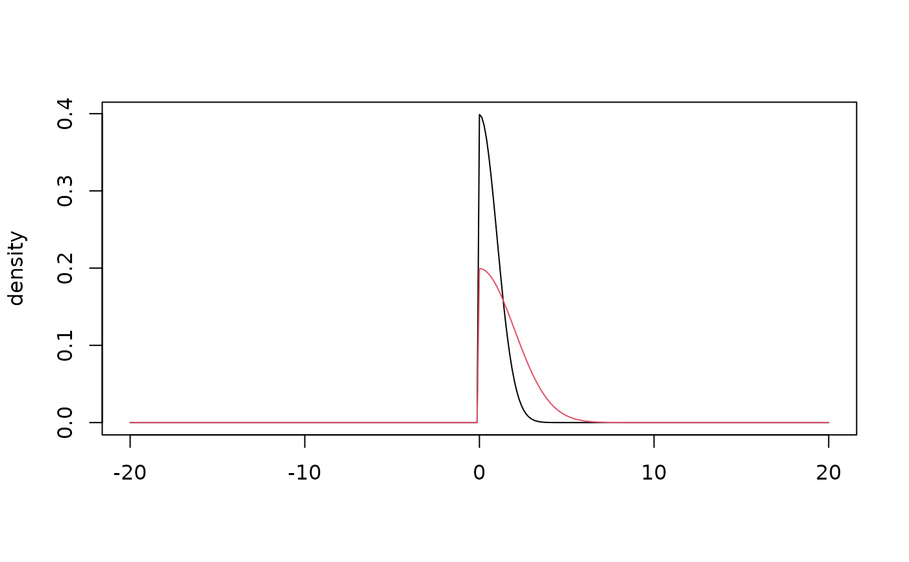
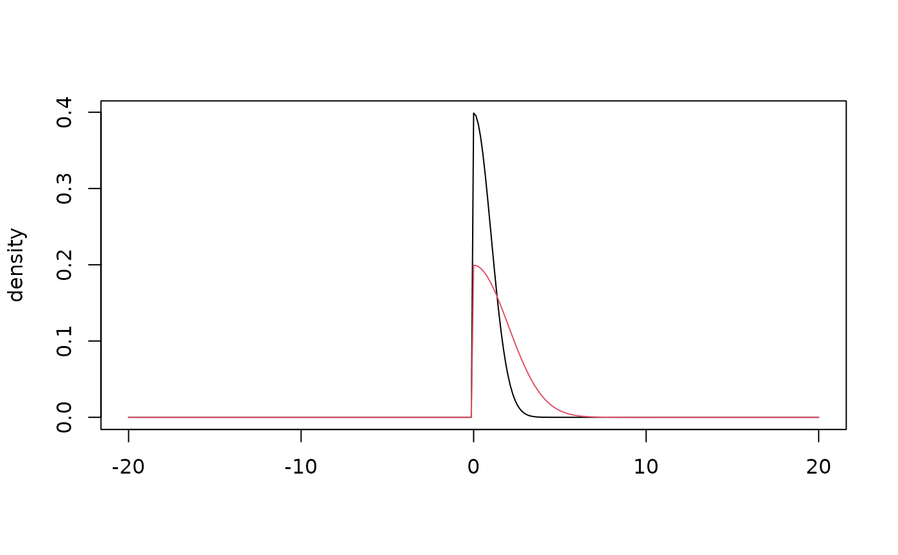

Plot prior distributions as densities. Continuous distributions are plotted as curves and discrete distributions as bar plots.
Usage
# S4 method for class 'Prior,missing'
plot(
x,
y,
default_limits,
dist_type = c("continuous", "discrete"),
density_fun,
add,
...
)
# S4 method for class 'PriorNormal,missing'
plot(x, y, add = FALSE, ...)
# S4 method for class 'PriorExponential,missing'
plot(x, y, add = FALSE, ...)
# S4 method for class 'PriorHalfCauchy,missing'
plot(x, y, add = FALSE, ...)
# S4 method for class 'PriorBernoulli,missing'
plot(x, y, add = FALSE, ...)
# S4 method for class 'PriorBeta,missing'
plot(x, y, add = FALSE, ...)
# S4 method for class 'PriorCauchy,missing'
plot(x, y, add = FALSE, ...)
# S4 method for class 'PriorGamma,missing'
plot(x, y, add = FALSE, ...)
# S4 method for class 'PriorHalfNormal,missing'
plot(x, y, add = FALSE, ...)
# S4 method for class 'PriorPoisson,missing'
plot(x, y, add = FALSE, ...)
# S4 method for class 'UniformPrior,missing'
plot(x, y, add = FALSE, ...)Arguments
- x
Object inheriting from
Prior- y
Not used.
- default_limits
Numeric range to plot distribution over.
- dist_type
Plot a continuous or discrete distribution.
- density_fun
Function which takes a vector of values and returns a vector of density values.
- add
logical. Add density to existing plot.
- ...
Optional arguments for plotting.
Details
Plot ranges are selected by default to show 99% of the density for unbounded distributions.
The limits can be changed by specifying xlim = c(lower, upper).
Colors, line types, and other typical par() parameters can be used.
Examples
plot(prior_normal(1, 2))
plot(prior_exponential(0.1))
plot(prior_half_cauchy(0, 1), xlim = c(-20, 20))
plot(prior_half_cauchy(0, 2), xlim = c(-20, 20), col = 2, add = TRUE)
plot(prior_bernoulli(0.4), xlim = c(0, 15))

plot(prior_beta(2, 2))
plot(prior_cauchy(0, 1), xlim = c(-20, 20))
plot(prior_cauchy(0, 2), xlim = c(-20, 20), col = 2, add = TRUE)
 plot(prior_gamma(0.1, 0.1))
plot(prior_gamma(0.1, 0.1))
 plot(prior_half_normal(0, 1), xlim = c(-20, 20))
plot(prior_half_normal(0, 2), xlim = c(-20, 20), col = 2, add = TRUE)

plot(prior_poisson(5), xlim = c(0, 15))
plot(prior_half_normal(0, 1), xlim = c(-20, 20))
plot(prior_half_normal(0, 2), xlim = c(-20, 20), col = 2, add = TRUE)

plot(prior_poisson(5), xlim = c(0, 15))
 plot(uniform_prior(1, 2), xlim = c(0, 3))
plot(uniform_prior(1, 2), xlim = c(0, 3))